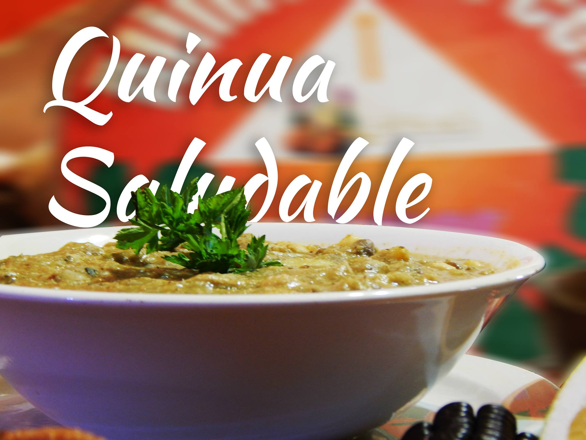
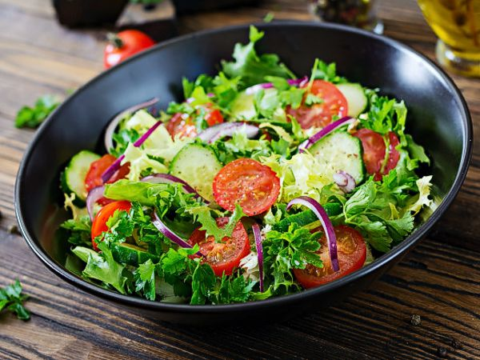
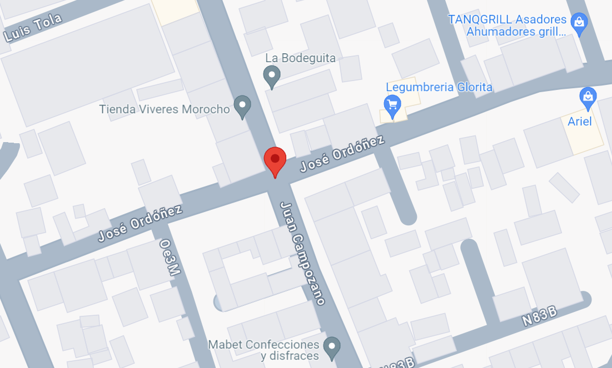

Bienvenidos a Nuestro Restaurante
Disfruta de la mejor comida vegetariana en un ambiente acogedor.
Menú
-
Ensalada Verde
 -
Tofu a la Parrilla

-
Lasagna de Vegetales

-
Postres Veganos

Aprende más sobre los beneficios de la comida vegetariana
Ubicación
Nos encontramos en Carcelen, Juan Campuzano y Jose Ordoñes, Quito, Ecuador.
 Google Maps